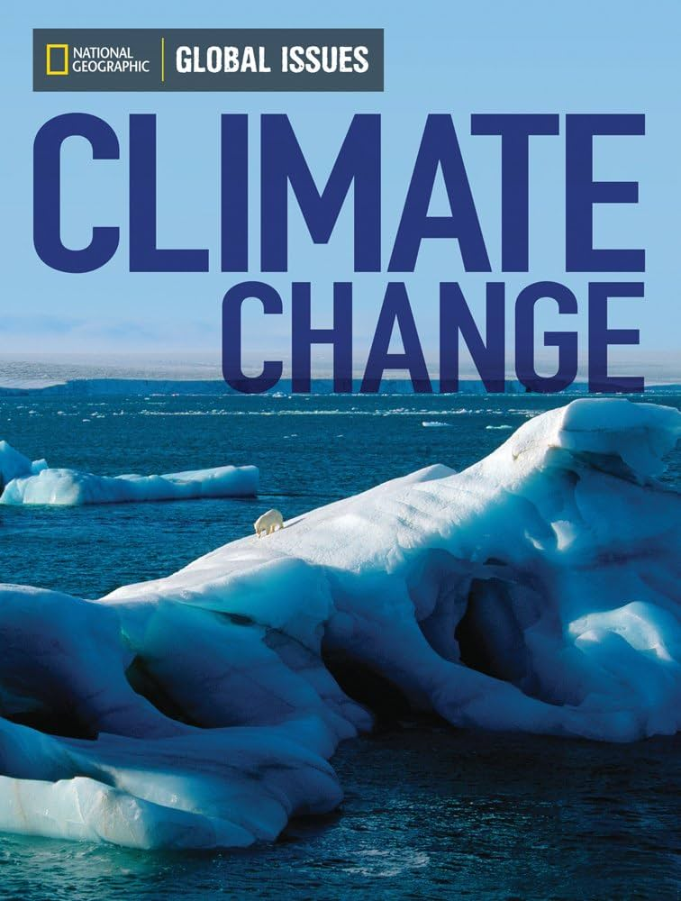

Portfolio
Investigative Report: Corruption in Politics
Date: 21 May 2023
In a comprehensive exposé that reverberates through the corridors of power, our
investigative team has meticulously dissected the shadows cast by corruption within
the political apparatus. From clandestine deals in dimly lit backrooms to the insidious
erosion of public trust, our findings illuminate the intricate web of deceit woven
within the very fabric of governance.
Feature Article: Climate Change Crisis
Date: 2 April 2023
In a poignant exploration of our planet's precarious future, this feature article
shines a spotlight on the imperative for immediate action in the face of climate change.
Delve into the sobering realities of rising temperatures, extreme weather events, and
ecological upheaval, as we navigate the urgent call to safeguard our shared home for
generations to come.
Podcast Episode: Voices of Change: Conversations with Champions of Social Justice
Date: 3 January 2024
Tune in to this captivating podcast episode as we sit down with impassioned activists
and seasoned experts, amplifying their resounding calls for transformative social change.
Through candid interviews and insightful discussions, delve into the frontline battles for
equality, justice, and human rights, igniting sparks of inspiration and catalyzing meaningful
action in our collective quest for a more equitable world.
Video Documentary: Bearing Witness: The Refugee Crisis Unveiled

Date: 7 May 2024
Step into the lives of refugees in this poignant video documentary, where their struggles,
resilience, and humanity take center stage. Through raw footage and heartfelt testimonials,
we uncover the harrowing challenges faced by displaced individuals and families, compelling
viewers to confront the urgent need for empathy, solidarity, and tangible support. Join us on a
journey of compassion and understanding as we advocate for a world where every refugee finds solace
and sanctuary.